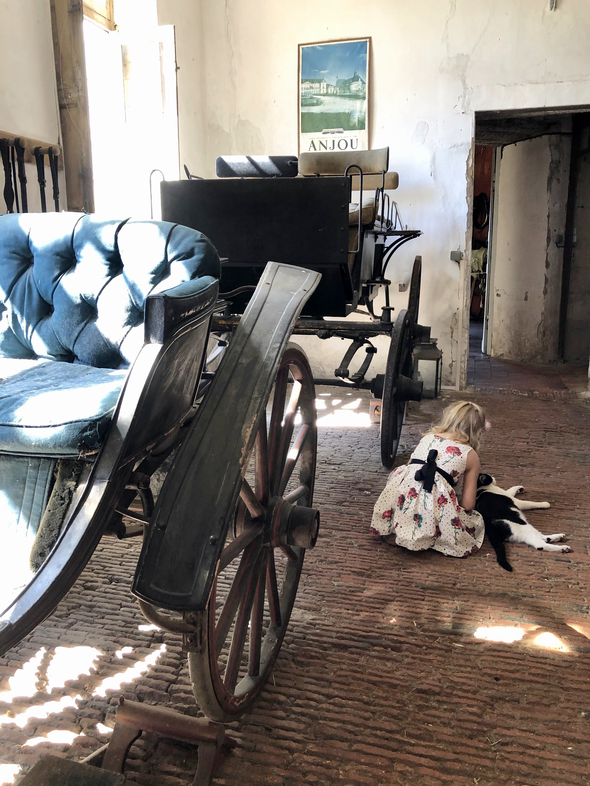
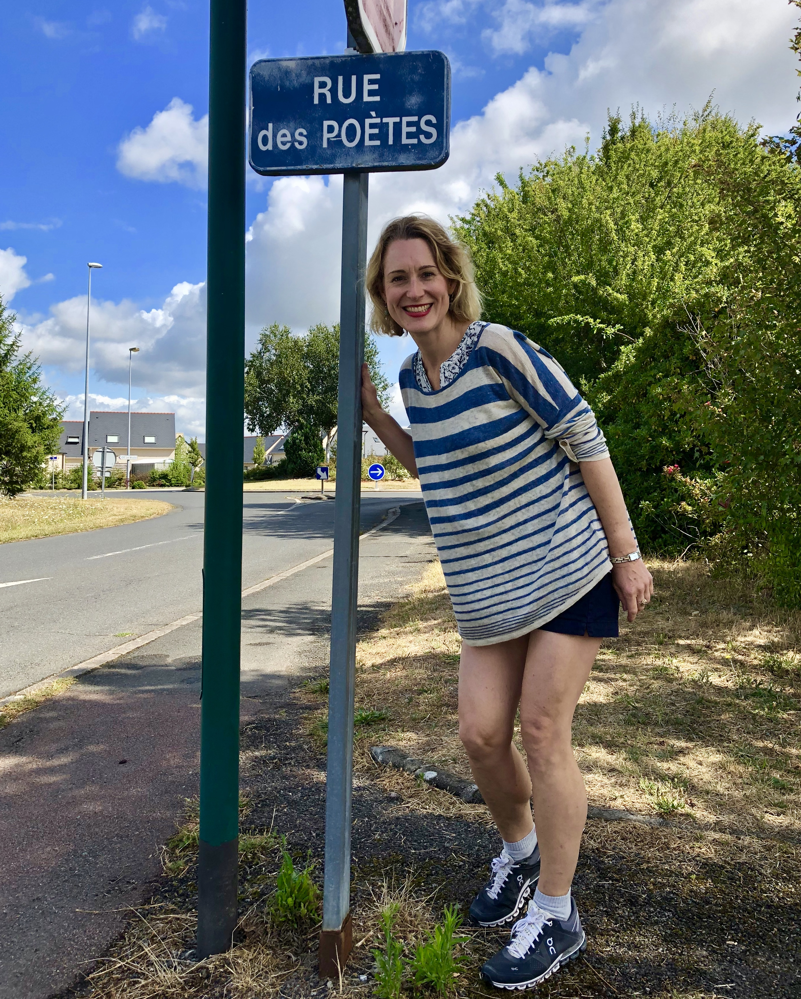

Publications
Selected work available online
"To Tell My Daughter When She's Older," "The Lockdown Sonnets: Late Winter" and "With My Daughter at the Pool"
Labor of Love: A Literary Mama Anthology
"Flung Vase" and "Mother and Daughter at the Grand Hotel, Locarno, Switzerland"
Poetry
"Motherhood Unshorn: Anna Laura Reeve's Reaching the Shore of the Sea of Fertility"
Literary Mama
[review]
"What's New from the Lighthouse: A Review of Chloe Honum's The Lantern Room"
Tupelo Quarterly
[review]
A Review of Tick Tock: Essays on Becoming a Parent Over 40, eds. Vicki Breitbart and Nan Bauer-Maglin / Dottir Press
Literary Mama
[review]
"Now Reading" Emily St. John Mandel's Station Eleven
Literary Mama
[review]
"Blue Nude Waiting for a Mammogram"
Painted Bride Quarterly
"Jellyfish Don't Swim, They Move with the Current" and "Gretel at 43"
Banshee Lit
"Fibroids"
Literary Mama
"After the Recession"
Tampa Review 54
"Another Wedding Season," "Moving Statue"
Masque & Spectacle
"How Children Read," "In a Salvador Dalì Painting," "Scaramouche"
Masque & Spectacle
"Early Death in the Orchard"
About Place Journal
"The Body"
MAYDAY Magazine
"My Mother's Ashes"
The Cento: A Collection of Collage Poems. Ed. Theresa Welford / Red Hen Press
"After Plenty," "I Contemplate My Inheritance," "My Mother's Kitchen," "Two Breasts"
Juried Reading, Book 15: The Poetry Center of Chicago / Plastique Press
"Muse"
The DMQ Review (disquieting muses quarterly)
"Famine"
The DMQ Review (disquieting muses quarterly)

